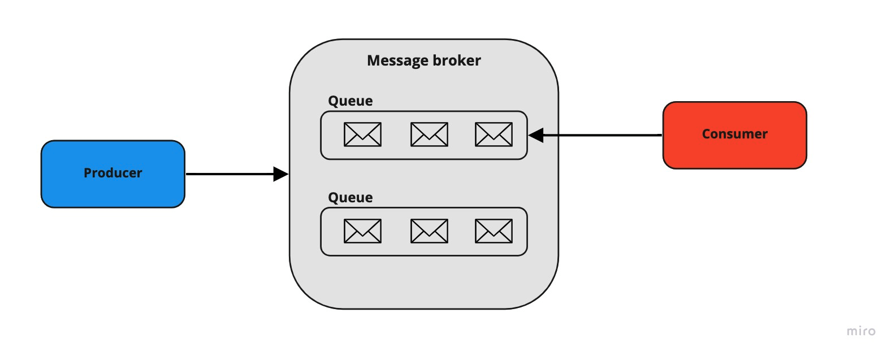
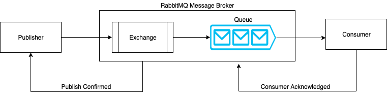

Зачем нужны messageMQ?
Message Queue - это асинхронное взаимодействие между компонентами в распределенной системе.
Очередь сообщений – это форма асинхронной коммуникации между сервисами, применяемая в бессерверных и микросервисных архитектурах. Сообщения хранятся в очереди, пока не будут обработаны и удалены. Использование очередей сообщений решает сразу две задачи:
-
Сокращает время ожидания пользователя за счет асинхронной обработки
-
Предотвращает потерю информации при сбоях
В свою очередь сообщение - это просто передача какого-то набора данных и этот набор данных передается на какой-то удаленный сервер. Это чем-то похоже HTTP Request с данными (текст, json и т.п.), который передается на удаленный сервер.
Преимущества MQ
Повышенная производительность
Компоненты (producer и consumer) взаимодействую с очередью (middleware), не друг с другом. Producer добавляет сообщения в очередь и не дожидается их обработки. И consumers обрабатывают сообщения, когда они доступны. Ни один компонент не пребывает в ожидании другого - это оптимизирует поток данных. Тем самым, повышается производительность независимых компонент.
Масштабируемость(горизонтальная)
И producer, и consumer, и message broker могут легко масштабироваться. В случае увеличения нагрузки на компонент, можно распределить её между экземплярами.
Отказоустойчивость
Если consumer, который обрабатывает сообщения из очереди падает, то сообщения могут быть добавлены в очередь на обработку позднее, когда система восстановится.
Недостатки очередей сообщений
-
По сути, это еще одна система, которую необходимо купить/установить, правильно сконфигурировать и поддерживать. Также потребуются дополнительные мощности.
-
Если брокер когда-либо выйдет из строя, это может остановить работу многих систем, взаимодействующих с ним. Как минимум необходимо позаботиться о резервном копировании данных.
-
С ростом числа очередей усложняется и отладка. При синхронной обработке сразу очевидно, какой запрос вызвал сбой, например, благодаря иерархии вызовов в IDE. В очередях потребуется позаботиться о системе трассировки, чтобы быстро связать несколько этапов обработки одного запроса для обнаружения причины ошибки.
Обобщенная схема взаимодействия компонентов MQ

Producer отправляет сообщение в некоторую именованную очередь. Не ожидает подтверждения доставки. Сообщение хранится в очереди, пока consumer не вытянет его для обработки (зависит от модели поведения consumer по отношению к очереди).
Message broker - центральная часть промежуточного программного обеспечения (middleware), распределяющая сообщения. Так как очереди могут использоваться несколькими производителями и потребителями одновременно, обычно их реализуют с помощью дополнительной системы, называемой broker. Брокер сообщений (Message Broker) занимается сбором и маршрутизацией сообщений на основе предопределенной логики. Сообщения могут передаваться с некоторым ключом — по этому ключу брокер понимает, в какую из очередей (одну или несколько) должно попасть сообщение.
Брокеры сообщений – это модули ПО, благодаря которым приложения, службы и системы могут взаимодействовать и обмениваться информацией. Брокеры сообщений преобразуют сообщения от разных формальных протоколов обмена сообщениями, позволяя взаимозависимым службам напрямую «общаться» друг с другом, даже если они написаны на разных языках или работают на других платформах. Брокеры сообщений валидируют, маршрутизируют, хранят и доставляют сообщения назначенным получателям. Брокеры действуют как посредники между приложениями, позволяя продюсерам отправлять сообщения, не зная о количестве, активности и местонахождении консьюмеров.
Message brokers: Apache Kafka, RabbitMQ, Apache ActiveMQ, WSO2, Memphis
В каком режиме работает передача информации(модели доставки сообщений для consumers)?
MQ поддерживают получение сообщений как методом Push, так и методом Pull:
-
Метод Pull подразумевает периодический опрос очереди consumer по поводу наличия новых сообщений; pull-модель — consumers сами отправляют запрос раз в n секунд к message broker для получения новой порции сообщений. Эффективна только при возможности группировать сообщения в батчи, таким образом достигая лучшей пропускной способности. К минусам модели можно отнести потенциальную разбалансированность нагрузки между разными consumers, а также более высокую задержку обработки данных. В Kafka именно consumers определяют, когда прочитать сообщение (т.е. Kafka использует pull модель).
-
Метод Push — message broker отправляет сообщение customer. Это дизайн паттерн «Издатель/Подписчик» (Publisher/Subscriber). push-модель — Producer(Publisher) отправляет сообщение в message broker. Message broker отправляет сообщение из очереди соответствующему customer(subscriber). По такой модели, например, работает RabbitMQ. Она снижает задержку обработки сообщений и позволяет эффективно балансировать распределение сообщений по consumers.
RabbitMQ
RabbitMQ – это брокер сообщений с открытым исходным кодом. Он маршрутизирует сообщения по всем базовым принципам протокола AMQP описанным в спецификации. Отправитель передает сообщение брокеру, а тот доставляет его получателю. RabbitMQ реализует и дополняет протокол AMQP.
AMQP(Advanced Message Queuing Protocol) - протокол прикладного уровня для передачи сообщений между компонентами системы.
RabbitMQ написан на Erlang (функциональный язык с динамической типизацией). Имеется реализация клиентов для доступа к RabbitMQ для целого ряда языков программирования, в том числе для Perl, Python, Ruby, PHP. Поддерживается горизонтальное масштабирование для построения кластерных решений.
В RabbitMQ применяется push модель: это помогает предотвратить перегрузку пользователей через ограничение предварительной выборки, настроенное consumers. Идеальный подход для обмена сообщениями с малой задержкой, который отлично работает с архитектурой RabbitMQ на основе очередей. Этот инструмент можно представить как почтовое отделение, которое получает, хранит и отправляет почту; только RabbitMQ принимает, хранит и передает сообщения с двоичными данными.
Кратко работу RabbitMQ можно описать следующим образом:
-
Producer(Publisher) отправляет сообщение в message broker.
-
Там оно попадает в компонент Exchange. Это пункт роутинга сообщений, в нем определяется в какую очередь будет отправлено дальше сообщение.
-
Exchange маршрутизирует сообщение в одну или несколько очередей(либо в другие exchanges) в соответствии с правилами привязки (binding) между ним и очередью.
-
Consumers поддерживают постоянные TCP-соединения с RabbitMQ и объявляют, какую очередь они получают.
-
RabbitMQ проталкивает (push) сообщения получателям.
-
Если включен механизм подтверждения (acknowledgement mode / manual), consumer отправляет подтверждение успеха или ошибки получения сообщения. После успешного получения, сообщение удаляется из очереди. Если механизм подтверждения не включен (automatic acknowledgement mode), брокер проталкивает сообщение подписчику и удаляет его из очереди(сообщение считается успешно доставленным).

Publisher(Producer)
(добавить описание)
Message
(добавить описание)
Exchange
При обмене сообщениями между поставщиками и подписчиками, сообщения не отправляются непосредственно в очереди. Сначала они проходят через Exchange, который перенаправляет их в очереди назначения.
Exchange - это компонент, который принимает сообщение от producer и направляет его дальше либо в одну очередь, либо в несколько очередей, либо в другие exchanges с помощью headers arguments, привязок (bindings) и ключей маршрутизации (routing key).
Binding — это «ссылка», которая настраивается для привязки очереди к exchange.
Routing key — это атрибут сообщения, на который обращает внимание exchange при принятии решения о том, как направить сообщение в очереди (в зависимости от exchange type).
Exchange можно настроить с такими параметрами, как name, exchange type, durability, auto-delete, arguments.
-
name (имя exchange)
-
type (тип маршрутизации)
-
durability (true - после перезагрузки сервера, exchange не удаляется)
-
auto-delete (автоматически удаляется exchange, если нет ни одной привязанной очереди)
-
arguments (optional, используется плагинами и специфичными для брокера функциями)
Exchange types
-
direct exchange;
-
fanout exchange;
-
topic exchange;
-
headers exchange;
-
dead letter exchange (AMQP extension);
Direct exchange
Сообщения попадают в очереди на основе ключа маршрутизации сообщений. Очередь должна совпадать с ключом маршрутизации. Он применяется при отправке сообщения отдельным лицам, например, при отправке уведомлений отдельным лицам в определенном географическом местоположении.
Сообщение помещается в очередь (очереди) с ключом привязки, точно совпадающим с ключом маршрутизации сообщения.

Fanout exchange
Предоставленные ключи маршрутизации игнорируются. Сообщения будут отправлены во все связанные с exchange очереди. Самый быстрый тип распределения.
Fanout exchange может быть полезен, когда одно и то же сообщение необходимо отправить в одну или несколько очередей с потребителями, которые могут обрабатывать одно и то же сообщение по-разному.

Topic exchange
Сообщение будет направлено в одну или несколько очередей на основе соответствия между ключом маршрутизации сообщений и шаблоном, который использовался для привязки очереди к exchange. Topic type часто используется для реализации различных вариантов шаблона publisher/subscriber.
Ключ маршрутизации должен быть списком слов, разделенных точкой (.). Шаблоны маршрутизации могут содержать звездочку (* или # ).

Headers exchange
Предназначен для маршрутизации по нескольким атрибутам, которые легче выразить в виде заголовков сообщений (message headers), чем в ключе маршрутизации. Сообщение соответствует, если значение заголовка равно значению, указанному в binding.
При связывании очереди к headers exchange можно указать более одного заголовка. Можно привязать очередь к обмену заголовками, используя более одного заголовка для сопоставления. Аргумент привязки «x-match» показывает должно ли быть полное совпадение или частичное. Когда для аргумента «x-match» задано значение «any», достаточно только одного совпадающего значения заголовка. В качестве альтернативы установка «x-match» на «all» означает, что все значения должны совпадать.

Dead letter exchange
Могут возникнуть ситуации, когда сообщение попавшее в message broker может остаться необработанным.
-
истекает TTL (истекает время жизни для сообщения)
-
размер очереди достигает предела
-
consumer возвращает негативный ответ на обработку (negatively acknowledged)
Сообщение перенаправляется в альтернативный exchange(DLX), а уже от туда в привязанную к нему очередь.
Настраивается либо с помощью policy, либо с помощью queue arguments. Если механизм не настроен, по умолчанию сообщение удаляется.
Смотри подробнее: https://www.rabbitmq.com/dlx.html
Queue
Queue - это структура данных на диске или в оперативной памяти, которая хранит ссылки на сообщения и отдает их копии consumers (потребителям).
Очереди в RabbitMQ — это FIFO ("first in, first out").
У очередей есть свойства, определяющие их поведение:
-
name
-
durability (очередь сохраняет свое состояние в случае перезапуска broker)
-
exclusive (очередь доступна только тем, кто получил доступ в рамках одного connection)
-
auto-delete (очередь автоматически удаляется, если нет активных подключений. Нет подключенных consumers)
-
arguments (optional, используется плагинами и специфичными для брокера функциями)
Durability
Очереди могут быть устойчивыми или временными (durability - true/false). Метаданные долговременной очереди хранятся в неком storage, а метаданные временной очереди по возможности хранятся в памяти.
Временные очереди не переживут перезапуск узла. Сообщения во временных очередях также будут удалены.
Устойчивые очереди будут восстановлены при загрузке узла, включая сообщения находящиеся в них(зависит от настройки durability самого сообщения).
Arguments
-
x-message-ttl(x-message-time-to-live) — позволяет установить время истечения срока жизни сообщения в миллисекундах. Если создание очереди происходит с установленным значением аргумента x-message-ttl, то такая очередь будет автоматически исключать сообщения, у которых истек срок действия. Установка значения аргумента x-message-ttl задает максимальный возраст для всех сообщений в данной очереди. Создание такой очереди позволяет предотвратить получение устаревшей информации. Это можно использовать в системах реального времени. Если у очереди для которой задан обменник для отклоненных сообщений установить значение аргумента x-message-ttl, то отклоненные сообщения в данной очереди начнут обладать сроком жизни.
-
x-max-length — задает максимальное число сообщений в очереди. Если число сообщений в очереди начинает превышать максимальное число, то начинают удаляться самые старые.
-
x-overflow — данный аргумент используется для настройки поведения в результате переполнения очереди. Доступны два значения: drop-head (значение по умолчанию) и reject-publish. Если выбрать drop-head, то самые старые сообщения будут удаляться. Если выбрать reject-publish, то прием сообщений будет приостановлен.
-
x-dead-letter-exchange — задает exchange, в который направляются недоставленные сообщения, которые не поставлены повторно в очередь.
-
x-dead-letter-routing-key — задает не обязательный ключ маршрутизации для отвергнутых сообщений.
-
и др.
Binding
Binding — это правило, которое сообщает обменнику в какую из очередей должны попадать сообщения. Привязки могут иметь ключ маршрутизации, используемый некоторыми типами обмена. Ключ маршрутизации предназначен для выбора определенных сообщений, опубликованных в exchange, для направления в связанную очередь. Другими словами, ключ маршрутизации действует как фильтр.
Если сообщение не может быть перенаправлено ни в одну очередь (например, из-за отсутствия binding), оно либо удаляется, либо возвращается издателю(зависит от установленных механизмов).
Subscriber(Consumer)
(добавить описание)
Подробнее о разнице между Apache Kafka и RabbitMQ
Поток данных.
RabbitMQ использует определенный ограниченный поток данных. Продюсер создает и отправляет сообщения, а консьюмер их принимает. Apache Kafka использует неограниченный поток данных, при этом пары «ключ-значение» непрерывно передаются в назначенную тему.
Использование данных.
RabbitMQ отлично подходит для запросов пользователей и транзакционных данных, таких как создание и размещение заказов. Кафка лучше справляется с операционными данными, такими как технологические процессы, статистика аудита и сбора данных, активность системы.
Обмен сообщениями.
RabbitMQ отправляет пользователям сообщения, которые удаляются из очереди после их обработки и подтверждения. Кафка – это журнал. Он использует непрерывные цепочки сообщений, которые сохраняются в очереди до истечения срока хранения. В отличие от большинства систем, очередь сообщений в Kafka является постоянной. Отправленные данные хранятся до тех пор, пока не истечет указанные период. Сообщения не удаляются после получения, их можно перечитывать. В RabbitMQ сообщение хранится до тех пор, пока принимающее приложение не получит его из очереди. Как только подписчик отмечает, что сообщение получено, оно удаляется.
Протокол
RabbitMQ поддерживает несколько стандартизированных протоколов: AMQP, MQTT, STOMP и др. Это позволяет заменить его на любой брокер на основе AMQP. Kafka использует пользовательский протокол поверх TCP/IP для связи между приложениями и кластером. Вы не сможете так просто удалить или заменить эту платформу, потому что она единственная реализует данный протокол.
Масштабирование
Kafka подходит для горизонтального масштабирования путём добавления большего количества машин. RabbitMQ в основном предназначается для вертикального масштабирования путём увеличения мощности.
Модель проектирования
RabbitMQ использует модель умный брокер/тупой консьюмер. Брокер последовательно доставляет сообщения консьюмерам и отслеживает их статус. Apache Kafka использует модель тупого брокера/умного консьюмера. Этот инструмент не отслеживает сообщения, которые прочитал каждый пользователь. Кафка запоминает только непрочитанные сообщения, сохраняя их в течение установленного периода времени. Консьюмеры должны самостоятельно следить за своей позицией в каждом журнале.
Топология
RabbitMQ использует топологию обмена очереди: сообщения отправляются на обмен, откуда затем рассылаются в различные привязки очередей для использования консьюмерами. Кафка использует топологию Publish/Subscribe, отправляя сообщения через поток в соответствующие топики, которые затем потребляются пользователями в разных авторизованных группах.